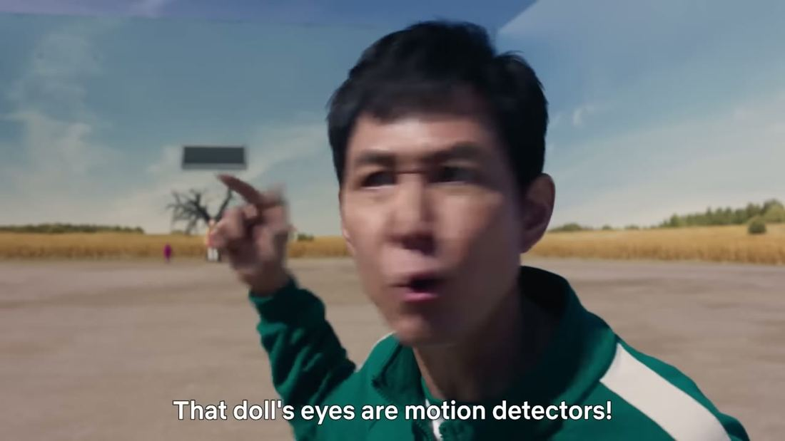
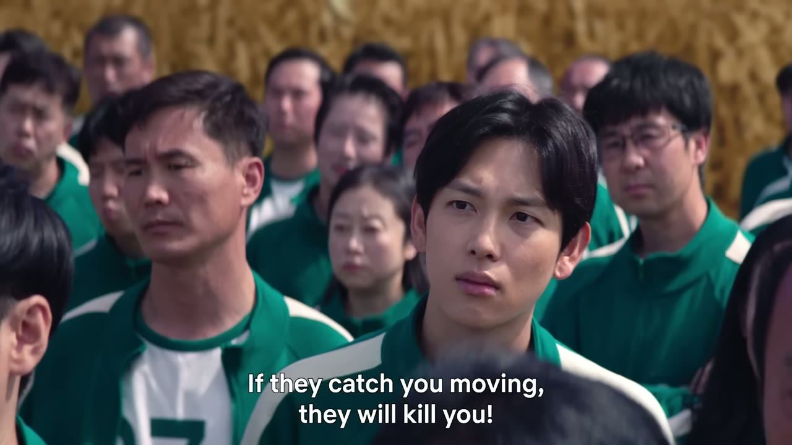
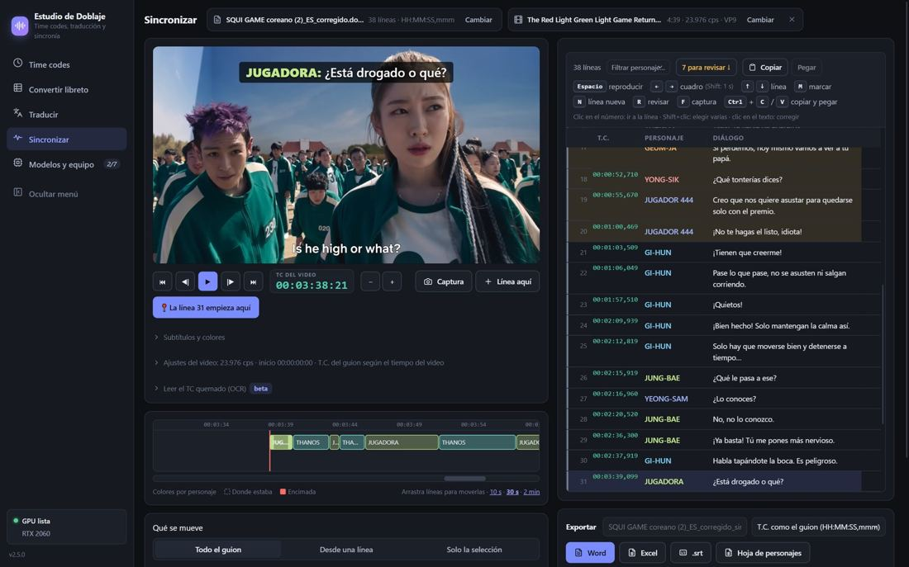

La IA ordena el tiempo. El doblaje lo haces tú.
Una app de escritorio que se encarga de lo mecánico (time codes, libretos, un primer borrador) para que tu oficio se dedique a la intención, el ritmo y la sincronía labial. Sin internet, en tu propio equipo.
Lo que cambia en tu mesa
Sin la app
- Horas capturando time codes a mano, línea por línea.
- Libretos en formatos distintos que hay que rehacer antes de empezar.
- Dudas al subir material confidencial a servicios en línea.
- Un corte nuevo del video obliga a revisar todo el guion otra vez.
Con Estudio de Doblaje
- Whisper propone los tiempos y tú los revisas.
- Cualquier libreto queda en una tabla de T.C., personaje y diálogo.
- Todo se procesa en tu computadora; nada sale a la nube.
- La comparación de versiones señala qué líneas cambiaron (Pro).
Desliza para ver el borrador

Del archivo del cliente a la entrega, paso a paso
Toca cualquier escena para verla en movimiento; vuelve a tocar para detenerla.
Del desfase al cuadro exacto
Selecciona un diálogo, arrástralo por la línea de tiempo y suéltalo donde entra la voz. La app te dice cuánto lo moviste, en segundos y en cuadros.

00:00:24:00 ¡Si se mueven, morirán!
- En rojo: la línea entra antes o después de la voz.
- Al arrastrar, la app muestra el desplazamiento en segundos y cuadros.
- En verde: la línea cae en el T.C. donde empieza la voz.
La app habla tu idioma
Interfaz en cuatro idiomas, letra más grande y tema claro u oscuro, para las jornadas largas en la cabina.
En tu idioma
Español, English, Português y Français. La primera vez usa el idioma de Windows; se cambia en Configuración.
Letra y tema
Tres tamaños de letra y tema claro u oscuro, para leer con menos esfuerzo.
Guía en dos idiomas
La guía de uso, con capturas señaladas, en español y en inglés.
Tus archivos de siempre
En cualquier idioma, lo que exportas conserva el formato T.C. · PERSONAJE · DIÁLOGO.

Una temporada entera con el mismo criterio
Memoria por serie, revisión antes de entregar, tramos, cola de episodios y asignación de personajes. Los diálogos de estas escenas son ejemplos ilustrativos.
Hecha desde la cabina, para la cabina
Traductor freelance
Traduce, adapta y sincroniza sin perder la tarde en tareas técnicas repetitivas.
Estudio de doblaje
Un mismo formato de libreto para todo el equipo y entregas más limpias.
Director y adaptador
Revisa adaptaciones y ajusta tiempos viendo el video, cuadro por cuadro.
Míralo en acción
La calidad del doblaje la pone el traductor.
- IntenciónLo que el personaje quiere decir, no solo lo que dice.
- RitmoQue la frase respire donde respira el actor.
- Sincronía labialQue la boca y la palabra lleguen juntas.
- AdaptaciónQue el chiste, el modismo y el contexto funcionen aquí.
Ninguna IA reemplaza ese criterio. La app solo te devuelve el tiempo para dedicárselo. La última palabra siempre es tuya.
Básica o Pro
| Función | Básica | Pro |
|---|---|---|
| Time codes con Whisper | ✓ | ✓ |
| Convertir libreto a tabla | ✓ | ✓ |
| Sincronizar con el video | ✓ | ✓ |
| Traducir con IA local | 1 al día | Ilimitado |
| Perfiles por serie | Básicos + 1 propio | Crear, editar, importar |
| Glosario | 25 entradas | Completo |
| Excel de Netflix (Dialogue List / Dub Script) | — | ✓ |
| Comparar versiones y leer TC quemado | — | ✓ |
| Probar el perfil: primeros 5 min | 2 al día | ✓ |
| Traducir un tramo (desde… hasta…) | — | ✓ |
| Revisar la traducción antes de entregar | Básica | + lip sync y memoria |
| Varios episodios en cola | — | ✓ |
| Asignar personajes y reporte borrador vs final | — | ✓ |
| Memoria de traducción por serie | — | ✓ |
Tu material no sale de tu PC
La transcripción y la traducción corren en tu computadora, sin enviar archivos a la nube. Pensado para trabajar con material bajo acuerdos de confidencialidad.
Lo que suelen preguntar
¿Estudio de Doblaje reemplaza al traductor?
No. La calidad y la adaptación final las aporta el traductor. La app captura tiempos, ordena libretos y entrega un borrador para que el trabajo creativo empiece antes.
¿Necesita internet?
No. La transcripción y la traducción con IA corren en tu computadora; ningún archivo se envía a la nube.
¿Qué equipo necesito?
La app detecta tu GPU (NVIDIA, AMD, Intel o Apple Silicon) y tu memoria, y recomienda el modelo que mejor corre en tu equipo. Sin GPU también funciona, más despacio.
¿Cuántos idiomas entiende Whisper?
99 idiomas, entre ellos coreano, japonés, inglés, francés y portugués. Sirve para transcribir el original aunque no llegue libreto.
¿Qué formatos de libreto acepta?
Word, Excel, .srt, .ass, ASREC y screenplay. El Excel de Netflix (Dialogue List / Dub Script) está en la versión Pro.
La descarga se abrirá pronto
Mientras tanto, mira la demo o revisa las funciones.
Descarga próximamente